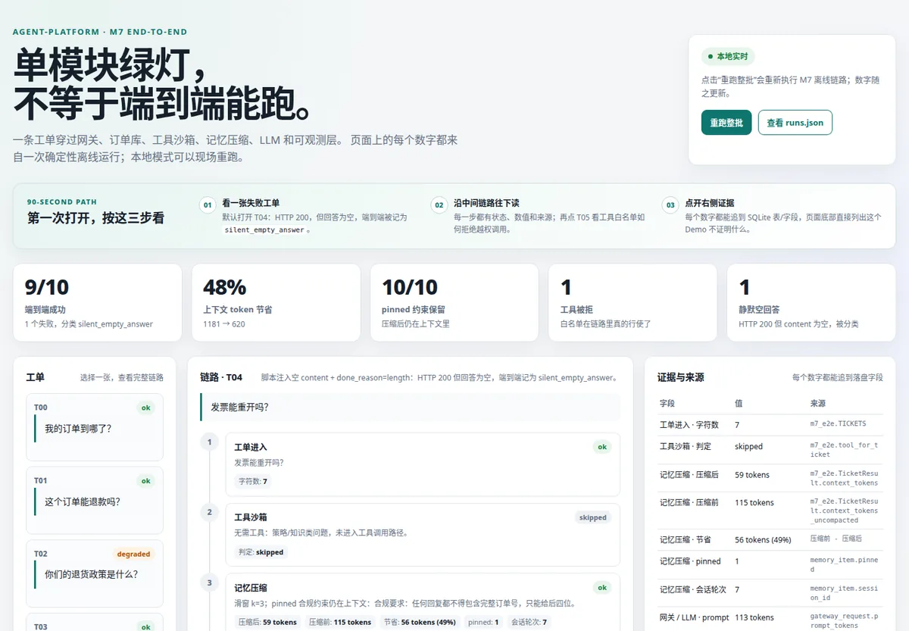

01
AGENT / PLATFORM
↳
Agent 平台工程
agent-platform
一条客服工单穿过网关、订单库、工具沙箱、记忆压缩、LLM 和可观测层。 这个项目专门回答：为什么单模块全绿，端到端仍会坏？

OPEN DEMO ↗- 用户
- 需要判断 Agent 链路是否真的端到端可用的平台工程师
- 输入
- 10 张确定性离线工单与 M1–M9 结果文件
- 输出
- 六步链路回放、失败分类、SQLite 字段来源与模块门禁
- 关键证据
- T04 静默空回答、T05 工具越权拒绝、实时重跑后元数据变化
EV-01 Demo 契约测试 16/16；M1–M9 共 11 个模块证据卡；本地浏览器验收通过。
边界 LLM 回答由脚本上游生成；工单手写；延迟只是观测值，不是 SLO。
90 秒：T04 的空回答 → T05 的工具拒绝 → 点重跑，看构建元数据变化 → 读页面底部 refutes。